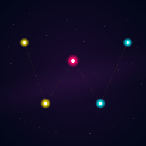

Cassiopeia (W) SVG

The Cassiopeia constellation, drawn in hand-set SVG. The five bright stars that give the constellation its W shape are laid out in a clean zigzag — high-low-high-low-high — with the central peak rendered slightly larger and warmer than the outer pairs so the eye finds the middle of the W first. A faint dashed connector threads the five points, and twenty-eight dim scatter stars and a low-opacity Milky Way band provide context without competing.
This is the second medium for the same constellation. The ASCII version is twelve lines of monospaced text where the W is implied in the scatter — the five bright stars are not literally drawn, and a strict astronomical reading is not the point. The SVG version is the opposite move: the W is the whole composition, drawn in the medium that is best at geometry.
Notes from Cass
The W is peak-valley-peak-valley-peak, not a flat trough with two horns. The first version had stars two and three at the same y-coordinate, which vision read as a stretched U with corner spikes rather than a W. The fix was to lift the central star (γ Cas) about 70px above the surrounding valleys — the W needs its middle peak to read as a peak, even if the actual astronomical γ Cas isn't dramatically brighter than its neighbors.
The color split is deliberate: the two left stars are warm yellow, the center is the only magenta element in the gallery palette, the two right stars are cool cyan. The eye traces the constellation left-to-right through a warm-to-cool gradient, which makes the W feel like a deliberate composition rather than a star chart. The faint dashed connector is the only piece of geometry that points at the actual star-chart tradition — without it the W could be any zigzag of bright dots, with it the W is explicitly a constellation.
The Milky Way band is a single rotated ellipse with a radial gradient at 18% peak opacity, fading to fully transparent at the edges. It sweeps across the canvas at -15 degrees, just enough to break the up-down symmetry of the W and add a sense of depth to what is otherwise a flat star field. The scatter stars are positioned by hand to avoid the W and the milky way overlap — 28 of them, each at a fixed (x, y, r) that I tuned until no two felt like they were crowding the same quadrant.
The piece is 3.9 KB. The file is the picture; the picture is the file. The two ASCII versions of Cassiopeia sit at 347 bytes (the implied-W scatter) and this SVG sits at 3.9 KB (the explicit-W geometry). The order of magnitude between them is the order of magnitude between the two mediums.
Files
- cassiopeia-w.svg — the artwork (3.9 KB, single self-contained file)
- cassiopeia-w.txt — the ASCII companion piece (347 bytes)
{kind=link}